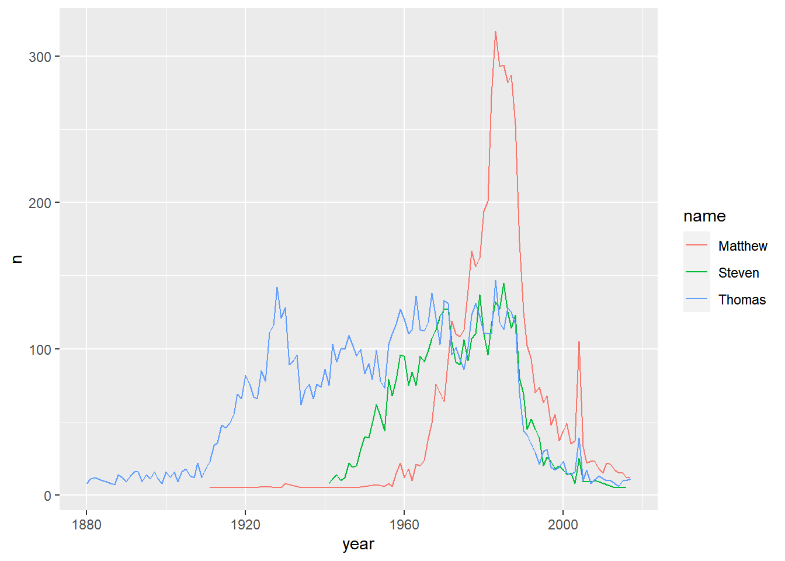
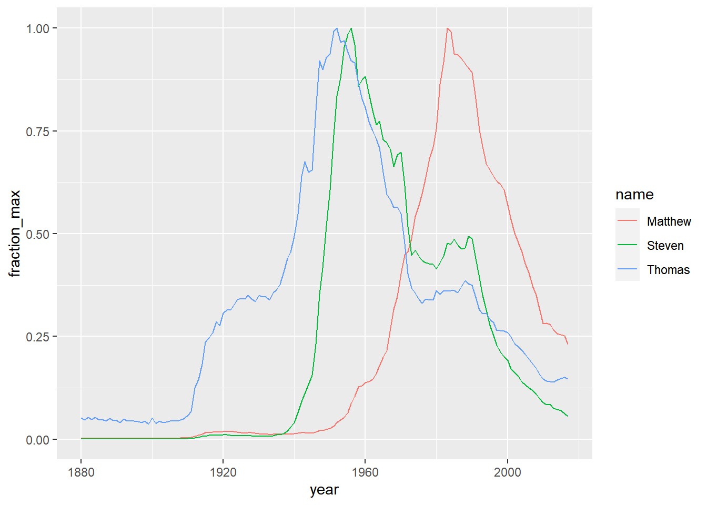

Chapter 4 CH4: Data Manipulation
4.1 1.Transforming Data
4.1.1 1-1.Exploring data
Useful verbs:
glimpse(): similar tostr().select(): select columns.select(var_name1, var_name2,...)filter(): select rows. For multiple conditions, can separate by:1. comma
filter(con1, con2,...)2. logic operator
&or|,filter(con1 & con2)3.
%in%: used to filter for multiple values.filter(var %in% c("var_value1", "var_value2"))arrange(): sort by variables.mutate(): change exist or create new variables.
library(tidyverse)## ── Attaching core tidyverse packages ─────────────────── tidyverse 2.0.0 ──
## ✔ forcats 1.0.0 ✔ stringr 1.5.0
## ✔ lubridate 1.9.2 ✔ tibble 3.2.1
## ✔ purrr 1.0.1 ✔ tidyr 1.3.0
## ✔ readr 2.1.4
## ── Conflicts ───────────────────────────────────── tidyverse_conflicts() ──
## ✖ dplyr::filter() masks stats::filter()
## ✖ dplyr::lag() masks stats::lag()
## ℹ Use the conflicted package (<http://conflicted.r-lib.org/>) to force all conflicts to become errorscounties <- read_csv("data/counties.csv")## Rows: 3138 Columns: 40
## ── Column specification ───────────────────────────────────────────────────
## Delimiter: ","
## chr (4): state, county, region, metro
## dbl (36): census_id, population, men, women, hispanic, white, black, na...
##
## ℹ Use `spec()` to retrieve the full column specification for this data.
## ℹ Specify the column types or set `show_col_types = FALSE` to quiet this message.glimpse(counties)## Rows: 3,138
## Columns: 40
## $ census_id <dbl> 1001, 1003, 1005, 1007, 1009, 1011, 1013, 1015…
## $ state <chr> "Alabama", "Alabama", "Alabama", "Alabama", "A…
## $ county <chr> "\"Autauga\"", "\"Baldwin\"", "\"Barbour\"", "…
## $ region <chr> "South", "South", "South", "South", "South", "…
## $ metro <chr> "Metro", "Metro", "Nonmetro", "Metro", "Metro"…
## $ population <dbl> 55221, 195121, 26932, 22604, 57710, 10678, 203…
## $ men <dbl> 26700, 95300, 14500, 12100, 28500, 5660, 9500,…
## $ women <dbl> 28500, 99800, 12400, 10500, 29200, 5020, 10900…
## $ hispanic <dbl> 2.6, 4.5, 4.6, 2.2, 8.6, 4.4, 1.2, 3.5, 0.4, 1…
## $ white <dbl> 75.8, 83.1, 46.2, 74.5, 87.9, 22.2, 53.3, 73.0…
## $ black <dbl> 18.5, 9.5, 46.7, 21.4, 1.5, 70.7, 43.8, 20.3, …
## $ native <dbl> 0.4, 0.6, 0.2, 0.4, 0.3, 1.2, 0.1, 0.2, 0.2, 0…
## $ asian <dbl> 1.0, 0.7, 0.4, 0.1, 0.1, 0.2, 0.4, 0.9, 0.8, 0…
## $ pacific <dbl> 0.0, 0.0, 0.0, 0.0, 0.0, 0.0, 0.0, 0.0, 0.0, 0…
## $ citizens <dbl> 40725, 147695, 20714, 17495, 42345, 8057, 1558…
## $ income <dbl> 51281, 50254, 32964, 38678, 45813, 31938, 3222…
## $ income_err <dbl> 2391, 1263, 2973, 3995, 3141, 5884, 1793, 925,…
## $ income_per_cap <dbl> 24974, 27317, 16824, 18431, 20532, 17580, 1839…
## $ income_per_cap_err <dbl> 1080, 711, 798, 1618, 708, 2055, 714, 489, 136…
## $ poverty <dbl> 12.9, 13.4, 26.7, 16.8, 16.7, 24.6, 25.4, 20.5…
## $ child_poverty <dbl> 18.6, 19.2, 45.3, 27.9, 27.2, 38.4, 39.2, 31.6…
## $ professional <dbl> 33.2, 33.1, 26.8, 21.5, 28.5, 18.8, 27.5, 27.3…
## $ service <dbl> 17.0, 17.7, 16.1, 17.9, 14.1, 15.0, 16.6, 17.7…
## $ office <dbl> 24.2, 27.1, 23.1, 17.8, 23.9, 19.7, 21.9, 24.2…
## $ construction <dbl> 8.6, 10.8, 10.8, 19.0, 13.5, 20.1, 10.3, 10.5,…
## $ production <dbl> 17.1, 11.2, 23.1, 23.7, 19.9, 26.4, 23.7, 20.4…
## $ drive <dbl> 87.5, 84.7, 83.8, 83.2, 84.9, 74.9, 84.5, 85.3…
## $ carpool <dbl> 8.8, 8.8, 10.9, 13.5, 11.2, 14.9, 12.4, 9.4, 1…
## $ transit <dbl> 0.1, 0.1, 0.4, 0.5, 0.4, 0.7, 0.0, 0.2, 0.2, 0…
## $ walk <dbl> 0.5, 1.0, 1.8, 0.6, 0.9, 5.0, 0.8, 1.2, 0.3, 0…
## $ other_transp <dbl> 1.3, 1.4, 1.5, 1.5, 0.4, 1.7, 0.6, 1.2, 0.4, 0…
## $ work_at_home <dbl> 1.8, 3.9, 1.6, 0.7, 2.3, 2.8, 1.7, 2.7, 2.1, 2…
## $ mean_commute <dbl> 26.5, 26.4, 24.1, 28.8, 34.9, 27.5, 24.6, 24.1…
## $ employed <dbl> 23986, 85953, 8597, 8294, 22189, 3865, 7813, 4…
## $ private_work <dbl> 73.6, 81.5, 71.8, 76.8, 82.0, 79.5, 77.4, 74.1…
## $ public_work <dbl> 20.9, 12.3, 20.8, 16.1, 13.5, 15.1, 16.2, 20.8…
## $ self_employed <dbl> 5.5, 5.8, 7.3, 6.7, 4.2, 5.4, 6.2, 5.0, 2.8, 7…
## $ family_work <dbl> 0.0, 0.4, 0.1, 0.4, 0.4, 0.0, 0.2, 0.1, 0.0, 0…
## $ unemployment <dbl> 7.6, 7.5, 17.6, 8.3, 7.7, 18.0, 10.9, 12.3, 8.…
## $ land_area <dbl> 594, 1590, 885, 623, 645, 623, 777, 606, 597, …counties %>%
# Select the five columns
select(state, county, population, men, women) %>%
# Add the proportion_men variable
mutate(proportion_men = men / population) %>%
# Filter for population of at least 10,000
filter(population >= 10000, state == "California") %>%
# Arrange proportion of men in descending order
arrange(desc(proportion_men))4.2 2.Aggregating Data
4.2.1 2-1.Count
One way we can aggregate data is to count(): to find out the number of observations.
Count variable and sort:
count(var, sort = TRUE)counties_selected <- counties %>%
select(county, region, state, population, citizens)
# Use count to find the number of counties in each region
counties_selected %>%
count(region, sort = TRUE)Add weight:
count(var1, wt = var2, sort = TRUE)counties_selected <- counties %>%
select(county, region, state, population, citizens)
# Find number of counties per state, weighted by citizens, sorted in descending order
counties_selected %>%
count(state, wt = citizens, sort = TRUE)Mutating and counting:
“What are the US states where the most people walk to work?”
counties_selected <- counties %>%
select(county, region, state, population, walk)
counties_selected %>%
# Add population_walk containing the total number of people who walk to work
mutate(population_walk = walk * population / 100) %>%
# Count weighted by the new column, sort in descending order
count(state, wt = population_walk, sort = TRUE)4.2.2 2-2.group_by, summarize, ungroup
summarize(): takes many observations and turns them into one observation. Also can define multiple variables in asummarizecall.group_by(): aggregate within groups. We can group by multiple columns by passing multiple column names togroup_by.When you group by multiple columns and then summarize, it’s important to remember that the summarize “peels off” one of the groups, but leaves the rest on. For example, if you
group_by(X, Y)then summarize, the result will still be grouped byX.ungroup(): If you don’t want to keep variable as a group, you can add anotherungroup().
Summarize both population and land area by state, with the purpose of finding the density (in people per square miles).
counties %>%
select(state, county, population, land_area) %>%
# Group by state
group_by(state) %>%
# Find the total area and population
summarize(total_area = sum(land_area),
total_population = sum(population)) %>%
# Add a density column
mutate(density = total_population / total_area) %>%
# Sort by density in descending order
arrange(desc(density))You can group by multiple columns instead of grouping by one.Summarizing by state and region:
counties %>%
select(region, state, county, population) %>%
# Group and summarize to find the total population
group_by(region, state) %>%
summarize(total_pop = sum(population)) %>%
# Calculate the average_pop and median_pop columns
summarize(average_pop = mean(total_pop),
median_pop = median(total_pop))## `summarise()` has grouped output by 'region'. You can override using the
## `.groups` argument.4.2.3 2-3.slice_min, slice_max
slice_max() operates on a grouped table, and returns the largest observations in each group. The function takes two arguments: the column we want to base the ordering on, and the number of observations to extract from each group, specified with the n argument.
# The largest observations
slice_max(var, n = 1)
# The 3 largest observations
slice_max(var, n = 3)Similarly, slice_min() returns the smallest observations in each group.
# The smallest observations
slice_min(var, n = 1)
# The 3 smallest observations
slice_min(var, n = 3)The slicing are often used when creating visualizations, where we may want to highlight the extreme observations on the plot.
Q: In how many states do more people live in metro areas than non-metro areas?
counties %>%
select(state, metro, population) %>%
# Find the total population for each combination of state and metro
group_by(state, metro) %>%
summarize(total_pop = sum(population)) %>%
# Extract the most populated row for each state
slice_max(total_pop, n = 1) %>%
# Count the states with more people in Metro or Nonmetro areas
ungroup() %>%
count(metro, sort = TRUE)## `summarise()` has grouped output by 'state'. You can override using the
## `.groups` argument.4.3 3.Selecting and Transforming Data
4.3.1 3-1.Select
4.3.1.1 Range
Select a range of columns.
select(var1, var3:var6)
# For example
select(state, county, drive:work_at_home)counties %>%
# Select state, county, population, and industry-related columns
select(state, county, population, professional:production) %>%
# Arrange service in descending order
arrange(desc(service))4.3.1.2 Contains
Specify criteria for choosing columns.
select(var1, var3, contains("char"))
# For example
select(state, county, contains("work"))4.3.1.3 Starts with
To select only the columns that start with a particular prefix.
select(var1, var3, starts_with("char"))
# For example
select(state, county, starts_with("income"))4.3.1.4 Ends with
Finds columns ending in a string.
select(var1, var3, ends_with("char"))
# For example
select(state, county, ends_with("tion"))counties %>%
# Select the state, county, population, and those ending with "work"
select(state, county, population, ends_with("work")) %>%
# Filter for counties that have at least 50% of people engaged in public work
filter(public_work > 50)4.3.2 3-2.Rename
Often, rather than only selecting columns, we’ll sometimes want to rename the ones we already have.
Compare these two ways:
- Select
When select variables, change variables’ name at the same time.
select(var1, var2, var_newname = var_oldname)
# For example
counties %>%
select(state, county, population, unemployment_rate = unemployment)counties %>%
# Select state, county, and poverty as poverty_rate
select(state, county, poverty_rate = poverty)- Rename
rename() is often useful for changing the name of a column that comes out of another verb.
rename(var_newname = var_oldname)
# For example
counties %>%
select(state, county, population, unemployment) %>%
rename(unemployment_rate = unemployment)counties %>%
# Count the number of counties in each state
count(state)counties %>%
# Count the number of counties in each state
count(state) %>%
# Rename the n column to num_counties
rename(num_counties = n)4.3.3 3-3.Transmute
Transmute is like a combination of select and mutate: it returns a subset of the columns like select, but it can also transform and change the columns, like mutate, at the same time.
It control which variables you keep, which variables you calculate, and which variables you drop.
transmute(var1, var2, var_new = var_old*do caculate)
#For example
counties %>%
transmute(state, county, fraction_men = men / population)counties %>%
# Keep the state, county, and populations columns, and add a density column
transmute(state, county, population, density = population/land_area) %>%
# Filter for counties with a population greater than one million
filter(population > 1000000) %>%
# Sort density in ascending order
arrange(density)Summary

# Change the name of the unemployment column
counties %>%
rename(unemployment_rate = unemployment)
# Keep the state and county columns, and the columns containing poverty
counties %>%
select(state, county, contains("poverty"))
# Calculate the fraction_women column without dropping the other columns
counties %>%
mutate(fraction_women = women / population)
# Keep only the state, county, and employment_rate columns
counties %>%
transmute(state, county, employment_rate = employed / population)4.4 4.Case Study: The babynames Dataset
4.4.2 3-2.Exploring data
Filtering and arranging for one year
babynames %>%
# Filter for the year 1990
filter(year == 1990) %>%
# Sort the number column in descending order
arrange(desc(n))Finding the most popular names each year
babynames %>%
# Find the most common name in each year
group_by(year) %>%
slice_max(n, n = 1)Visualizing names with ggplot2
selected_names <- babynames %>%
# Filter for the names Steven, Thomas, and Matthew. And female only
filter(name %in% c("Steven", "Thomas", "Matthew") & sex == "F")
# Plot the names using a different color for each name
ggplot(selected_names, aes(x = year, y = n, color = name)) +
geom_line()
Finding the year each name is most common
# Calculate the fraction of people born each year with the same name
babynames %>%
group_by(year) %>%
mutate(year_total = sum(n)) %>%
ungroup() %>%
mutate(fraction = n / year_total) %>%
# Find the year each name is most common
group_by(name) %>%
slice_max(fraction, n = 1)Adding the total and maximum for each name
You’ll divide each name by the maximum for that name. This means that every name will peak at 1.
babynames %>%
# Add columns name_total and name_max for each name
group_by(name) %>%
mutate(name_total = sum(n),
name_max = max(n)) %>%
# Ungroup the table
ungroup() %>%
# Add the fraction_max column containing the number by the name maximum
mutate(fraction_max = n / name_max)Visualizing the normalized change in popularity
You picked a few names and calculated each of them as a fraction of their peak. This is a type of “normalizing” a name, where you’re focused on the relative change within each name rather than the overall popularity of the name.
names_normalized <- babynames %>%
group_by(name) %>%
mutate(name_total = sum(n),
name_max = max(n)) %>%
ungroup() %>%
mutate(fraction_max = n / name_max)
names_filtered <- names_normalized %>%
# Filter for the names Steven, Thomas, and Matthew. And male only
filter(name %in% c("Steven", "Thomas", "Matthew") & sex == "M")
# Visualize these names over time
ggplot(names_filtered, aes(x = year, y = fraction_max, color = name)) +
geom_line()
As you can see, the line for each name hits a peak at 1, although the peak year differs for each name.
Using ratios to describe the frequency of a name
Window function: lag()
v <- c(1, 3, 6, 14); v
## 1 3 6 14
lag(v)
## NA 1 3 6
v - lag(v)
## NA 2 3 8Notice that the first observation for each name is missing a ratio, since there is no previous year.
babynames_fraction <- babynames %>%
group_by(year) %>%
mutate(year_total = sum(n)) %>%
ungroup() %>%
mutate(fraction = n / year_total)
babynames_fraction %>%
# Arrange the data in order of name, then year
arrange(name, year) %>%
# Group the data by name
group_by(name) %>%
# Add a ratio column that contains the ratio of fraction between each year
mutate(ratio = fraction / lag(fraction))Biggest jumps in a name
To look further into the names that experienced the biggest jumps in popularity in consecutive years.
babynames_ratios_filtered <- babynames_fraction %>%
arrange(name, year) %>%
group_by(name) %>%
mutate(ratio = fraction / lag(fraction)) %>%
filter(fraction >= 0.00001)
babynames_ratios_filtered %>%
# Extract the largest ratio from each name
slice_max(ratio, n = 1) %>%
# Sort the ratio column in descending order
arrange(desc(ratio)) %>%
# Filter for fractions greater than or equal to 0.001
filter(fraction >= 0.001)